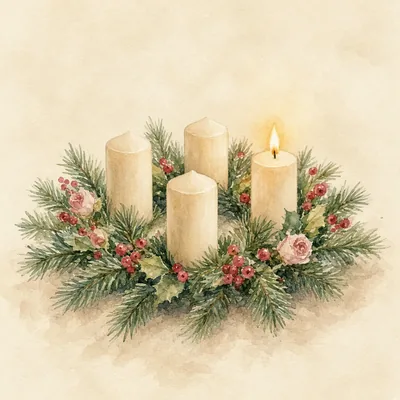

Waarom worden elke zondag van de advent kaarsen aangestoken?
Er zijn vier adventskaarsen. Elke zondag komt er een kaars bij, zodat er meer licht is. Licht overwint het donker, en zo tellen we af naar de komst van Jezus, het Licht.
Vandaag begint de Advent. Steek samen met Eli de eerste kaars aan als jullie een adventskrans of vier kaarsen in huis hebben. Anders volstaat één kaars of een lampje, en even uitleggen dat er de komende weken telkens meer licht bij komt.
Een kwartiertje is genoeg: Eli mag (helpen) aansteken, jullie vertellen het in eenvoudige woorden, en kleur daarna het wolkje van 29/11 op de adventskalender.
Voorbereiden: blad 1 van de adventskalender moet afgedrukt zijn, kleurpotloden bij de hand.